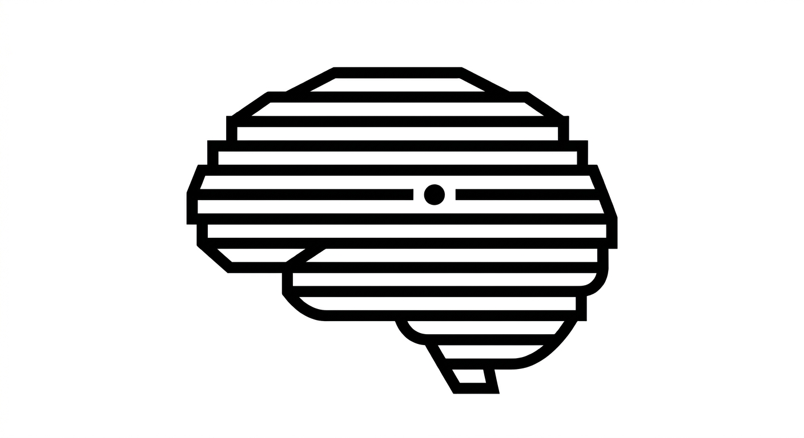

VeritasPromptVeritasPrompt. Turning vague research curiosity into rigorous, safe academic outputs.
Tailors the prompt's framework—PICO for medicine, UDL/Bloom for education, archival research for humanities, etc.
Each type applies a different cognitive scaffold used by expert scholars. The nine types are grouped into Exploration, Structure, Critique, and Design.
Copy the prompt and paste it into the recommended AI tool. Always verify citations.
💡 Pro tip: Use Ctrl + Enter to generate quickly.
Automated citation verification, advanced technique library, and provenance reports. Join the waitlist.
What worked well? What could be improved? Your input shapes VeritasPrompt.